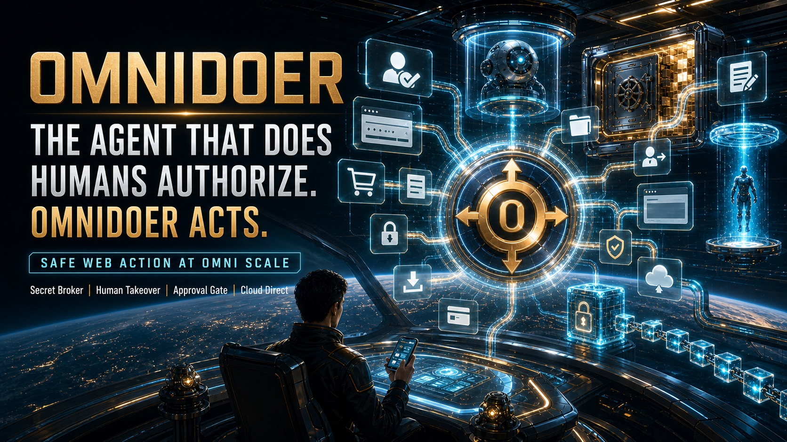
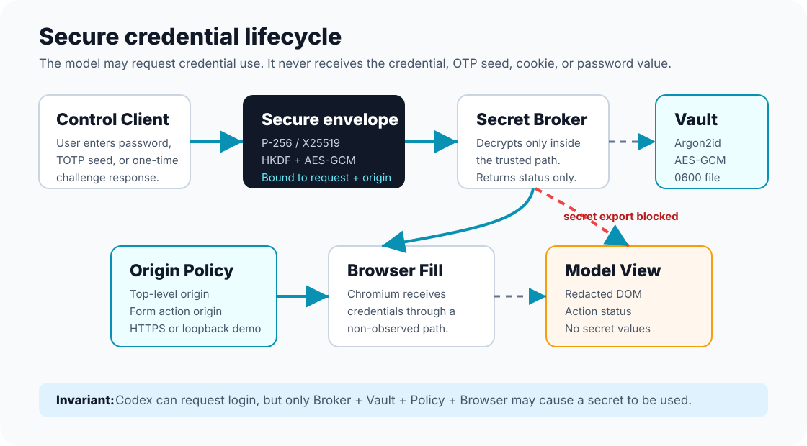
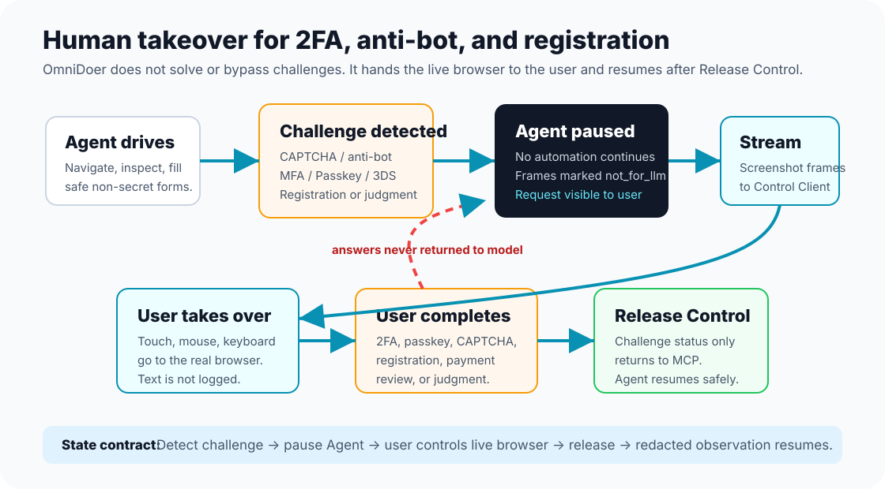
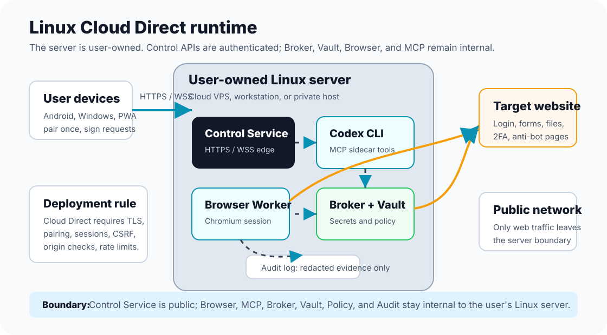

Codex Preserved
OmniDoer extends Codex CLI through MCP and does not create a default OpenAI API client or billing path.

All-purpose web action, inside the security boundary. A Codex CLI MCP sidecar where secrets remain with the broker, vault, and user-controlled client.
The agent may request an action. The broker checks the origin. The vault uses the secret. The browser receives the credential. The model never does.
OmniDoer extends Codex CLI through MCP and does not create a default OpenAI API client or billing path.
Users handle credentials, approvals, challenges, and human takeover from one PWA-friendly interface.
Android, Windows, and browser clients connect directly to the user's own cloud server with pairing and E2EE secret submission.
When a site needs a new account, the live registration page is proxied to the Control Client so the user completes signup and verification directly.
OpenClaw-style macros and prompt-only assistants can start workflows, but they usually stop at anti-bot, registration, and payment gates. OmniDoer combines Codex planning with a secure Linux runtime, then hands the human-critical steps to the user and resumes automatically.
The execution advantage comes from three boundaries, not model tricks: strict secret custody, live human projection for challenge gates, and explicit approvals for high-risk actions.
Secrets, keys, and challenge answers are encrypted and policy-gated between Broker, Vault, and browser worker; the model receives only redacted status and observations.
CAPTCHA, anti-bot, passkey/WebAuthn, registration, and 3DS flows are projected to the paired Control Client; user input is only accepted when frame freshness and request scope are valid.
Payments, OAuth grants, account changes, media upload, and message sending all require an explicit scoped approval path before execution.
Validation is test-enforced:
Install OmniDoer on a Linux server or local development machine with one shell command. The bootstrap keeps Codex as the model and auth entrypoint, then starts the Control Service and registers the MCP sidecar when Codex CLI is available.
curl -fsSL https://raw.githubusercontent.com/OmniDoer/omnidoer/main/omnidoer/scripts/install-cloud-direct.sh | shcurl -fsSL https://raw.githubusercontent.com/OmniDoer/omnidoer/main/omnidoer/scripts/install-cloud-direct.sh | \
OMNIDOER_CLOUD_DIRECT=1 OMNIDOER_PUBLIC_URL=https://agent.example.com sh~/omnidoer/.venv/bin/omnidoer control pair --print-qr
~/omnidoer/.venv/bin/omnidoer control submit-task "Open the local demo and download my invoice"Set OMNIDOER_INSTALL_DIR, OMNIDOER_HOST, OMNIDOER_PORT, OMNIDOER_START=0, OMNIDOER_REGISTER_MCP=0, or OMNIDOER_SKIP_PLAYWRIGHT=1 to customize the bootstrap.

These exact-text diagrams define the core OmniDoer runtime: secure credential storage, human takeover for 2FA and anti-bot pages, and Linux Cloud Direct deployment.



OmniDoer is built around a real controlled browser, cloud control service, user handoff, policy approvals, and audit evidence rather than a browser-only demo.